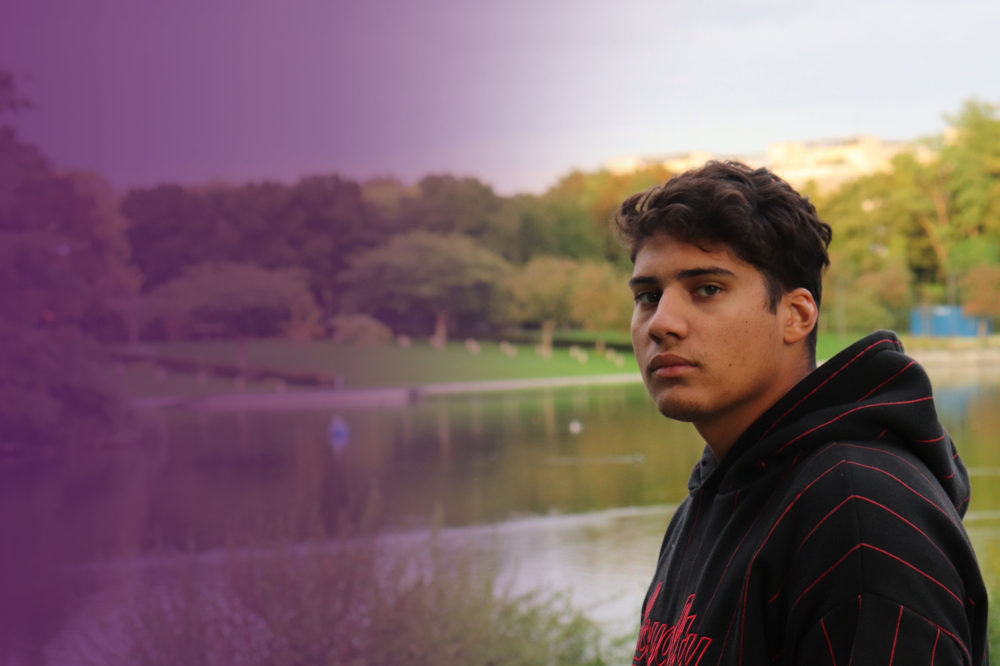

Je m'appelle Tayrone Lacroix, je suis né à Creil, dans l'Oise, le 10 novembre 2002. Je tombe très vite amoureux du dessin, je m'oriante très vite dans la bandes déssinées et devenir un auteur reconnu et, alors, pour moi, un RÊVE, un OBJECTIF. Après avoir passer mes années collège à la Chapelle en Serval (60) et à Compiègne (60), je rentre au lycée des métiers AMYOT D'INVILLE en Communication Visuelle Pluti-Média à Senlis (60) et commence ma formation de graphiste en 2018, juste après la deuxième étoiles des bleus. J'effectue un premier stage, en 2019, à l'Espace Matisse, une galerie d'art de la ville de Creil, situés au quartiers des moulins, j'y effectue des affiches, des newsletters et participe à la fête des associations de Creil. Enseuite, en 2020, je continu ma formation à l'imprimerie ADN, à Senlis, dans laquel je faconne et imprime des affiches, des stickers, des cartes de visites, des pancartes et plus encore. Pour finir, en 2021, afin de valider mon Baccaluréat Professionnel, je continu de me former auprès de Headline Agency, à Garges-lès-Gonesse (95), dans laquel je réalise une customisation d'une voiture télécommander accompagner de son packaging à l'image de l'entreprise. Bac en poches et après avoir réussi le concours d'entrée je rentre à l'École Supérieure d'Art et de Design d'Amiens (80) dans le but d'obtenir mon DNA (Dimpôme National d'Art), actuellement j'y suis en 2ème année. L'aventure continu...